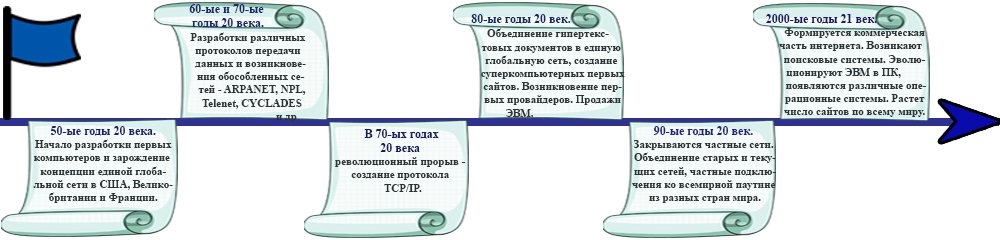

В Россию Интернет проник в начале 90-х. В те годы ряд университетов и научных организаций приступил к построению собственных компьютерных сетей. На базе Института Атомной Энергетики им. Курчатова сложились две крупные коммерческие компании, которые предоставляли услуги по подключению к Интернету. В 1993 году сильный импульс для развития Интернета в России дала «Телекоммуникационная программа» от Международного Научного Фонда. В следующем году, в рамках государственной программы «Университеты России» выделили направление для создания федеральной университетской компьютерной сети. Сеть вступила в рабочий строй в 1995 году. В 1996-98 годах построили опорную сеть для науки и высшей школы. Одновременно с этим возникали и развивались сети коммерческих поставщиков. Вначале они ориентировались на подключение организаций. В 1998 году Ростелеком образовал совместно с Релкомом компанию Релком — ДС. На сегодня это самый крупный поставщик Интернет услуг в России. На сегодняшний день в Интернете уже есть огромная база информации на русском языке. По оценкам социологов в конце 1998 года в России около 1.5 миллиона человек были пользователями сети Интернета, при этом более половины из этих пользователей проживали за пределами Москвы. В 1999 году количество пользователей превысило 5 миллионов человек.
Этапы развития интернета
Пройти тестирование по теме "История возникновения Интернета и этапах его развития"